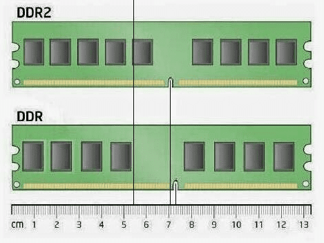
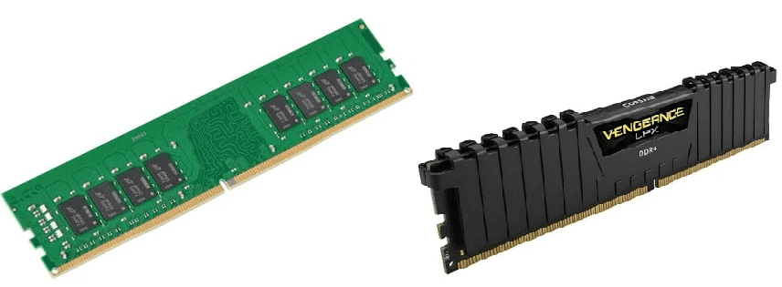
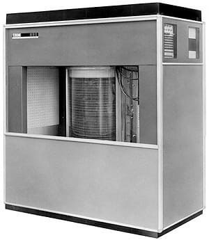
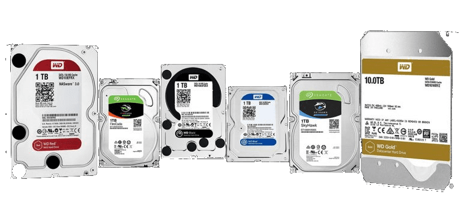
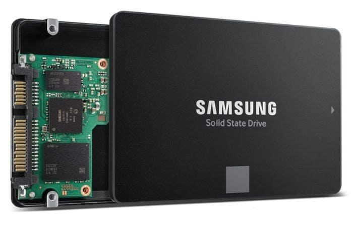
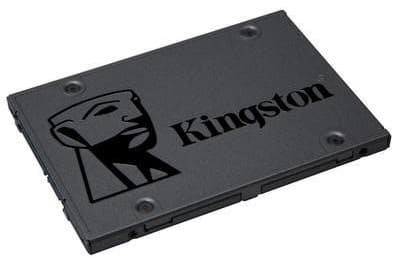
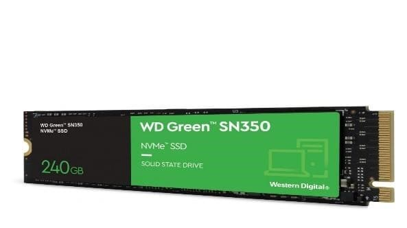

Tipos de Armazenamento
Memória RAM
O que é Memória RAM?
A memória de acesso aleatório (Random Access Memory, abreviado para RAM), é uma memória volátil que requer corrente elétrica para reter dados e quando a energia é desligada os dados são perdidos. Ela armazena pequenas informações para o acesso rápido do processador.
Existem dois tipos de memória RAM que são a SDR e DDR. A SDR realiza apenas uma leitura por ciclo e a DDR realiza duas leituras por ciclo e consequentemente são mais rápidas e mais utilizadas nos computadores, tanto que são atualizadas periodicamente aprimorando o gerenciamento de energia, desempenho e eficiência de canais (DDR, DDR2, DDR3, DDR4 e DDR5), e para não se confundir entre os DDRs os encaixes são diferentes uns aos outros.
Em comparação com outros tipos de armazenamento, como HD e SSD, a memória RAM é a mais rápida tanto de acesso quanto de gravação dos dados e essa velocidade é medida em MHz. Mas a grande desvantagem é o preço comparado a quantidade de armazenamento. As melhores marcas são a Corsair e Kingston, os preços variam de R$150 a R$800 dependendo do tamanho de seu armazenamento e velocidade (MHz).
Disco Rígido (HD)
O que é um HD?
O disco rígido é um dispositivo de armazenamento antigo, mas que evoluiu e muito com o passar dos anos. Um dos primeiros HDs que surgiram foi o que equipou o IBM 305 RAMAC, computador que entrou em operação em 1956.
Esse HD era capaz de armazenar até 5MB de dados (um avanço para a época) e possuía dimensões enormes. Com o passar dos anos, os HDs foram ganhando mais capacidade de armazenamento e, paralelamente, se tornaram menores, menos custosos e mais confiáveis.
O HD interno é uma das partes mais importantes do computador, afinal, ele é responsável por guardar todos os arquivos, dados e informações que são utilizadas pelo processador. Nele são arquivados documentos, fotos e vários outros tipos de arquivos, como softwares e o próprio sistema operacional.
Fisicamente, os HDs podem ter dimensões variadas, indo desde o tamanho de uma caixa de fósforos até chegar a peças grandalhonas. Felizmente, a indústria criou padrões de tamanhos para facilitar o uso dos HDs nos computadores.
Solid State Drive (SSD)
O que é SSD?
O SSD, ou Solid State Drive, é uma tecnologia de armazenamento de dados que pode ser adaptado em um computador, notebook ou até mesmo em um servidor para armazenar seus arquivos como fotos, vídeos, etc. Sendo um sucessor do HD, o SSD é uma tecnologia recente, dentre suas principais características além do armazenamento destacam-se a leitura e gravação de dados em velocidades muito superiores ao HD.
Isso traz ao usuário de uma transferência muito mais veloz de arquivos pesados entre partições e também outros dispositivos de armazenamento externo para interno. Podemos citar também uma inicialização de sistema operacional muito mais rápida e eficaz, maior agilidade na abertura e fechamento de programas e aplicativos armazenado neste tipo de dispositivo.
Tipos de SSD
Inicialmente o SSD, como qualquer outra tecnologia recém lançada, era um produto inacessível para a maior parte dos usuários devido a seus preços elevados. Atualmente a tecnologia se popularizou de tal maneira que nem compensa mais comprar o HD.
SSD linha SATA:
No mercado encontramos o modelo SATA, de tamanho semelhante ao HD, porém com velocidade superior em uma faixa de preço média de R$ 170 – 500 reais. O preço varia de acordo com a quantidade de armazenamento desejada (ex. 128gb, 256gb 500gb ou 1T) já que a velocidade entre desta linha não varia muito (em média, leitura/escrita: 550mb/480 mb/s). Algumas marcas mais populares são Kingston, WD Green e SANDISK.
SSD linha NVMe M2 PCie:
Os modelos NVMe M2 ainda são mais recentes tecnologicamente falando que a linha SATA. Com menor tamanho, conectados diretamente na placa mãe do computador esses dispositivos conseguem atingir velocidades extremamente rápidas (em média, leitura/escrita: 3500/1000 mb/s). Essa linha costuma ser mais cara do que a SATA, numa média de R$ 250 – 1500 reais, podendo o preço variar dependendo da marca: Kingston, WD Green e SANDISK e tamanho escolhido (ex. 128gb, 256gb 500gb, 1T ou 2T).